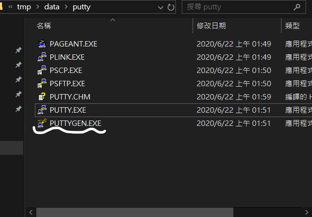
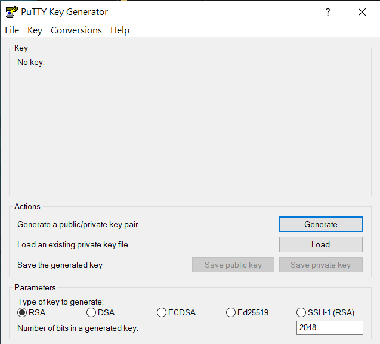
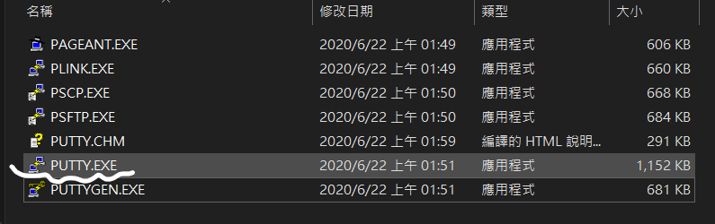

第四周 <<
Previous 第五周
如何使用SSH？
1.用編輯器進入SH
2.輸入 ssh-keygen -t rsa -b 4096 -C "學號" 即可取得SSH Key (*盡量不要用複製的 可能會造成錯誤)(*白色圈起來的部分是SSH Key 惠存在的路徑)

3.找到路徑裡SSH的鑰匙
4.用SCITE把id_rsa.pub 開啟 複製裡面所有的文字 (*在SCITE中可以按Options->Wrap 方便瀏覽)

5.到Github-->seeting-->SSH and GPG keys 按下"New SSH key"
6.Title 上寫上學號 Key 複製剛剛貼上的Key 再按下"Add SSH key"
7.上述完成後再找到puttygen.exe 
8.按下Load"

9.到對應的SSH路徑選取id_rsa 選取完後再按下"save private key" 得到ppk 存到同一個路徑
10.找到putty.exe

11.在Saved Sessions 輸入 "github.com" 在按下 "Save"
12.再到 "Auth" 找到"Private key file for authentication" 按下"瀏覽"
13.找到剛剛儲存的ppk(*如果找不到檔案記得右下角的檔案選項選擇All files)
14.選擇後回到第11步驟的介面 按下"github.com" 再按下 "Save"
15.到自己的倉儲後找到 ".git" (*如果找不到這個資料夾記得在功能區--> 顯示-->將"隱藏的項目"勾選)
16.找到config 用SCITE開啟
17.在籃圈的格子輸入 "url = git@github.com:學號/對應的資料夾 再把綠色部分加上#號
18.再到start.bat裡 藍圈輸入
set GIT_HOME=%Disk%:\portablegit\bin\
set GIT_SSH=%Disk%:\putty\plink.exe
即可完成SSH
第四周 <<
Previous